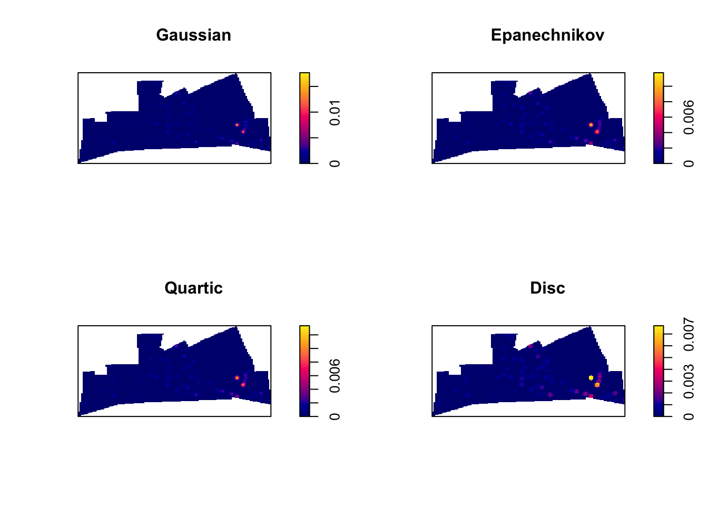
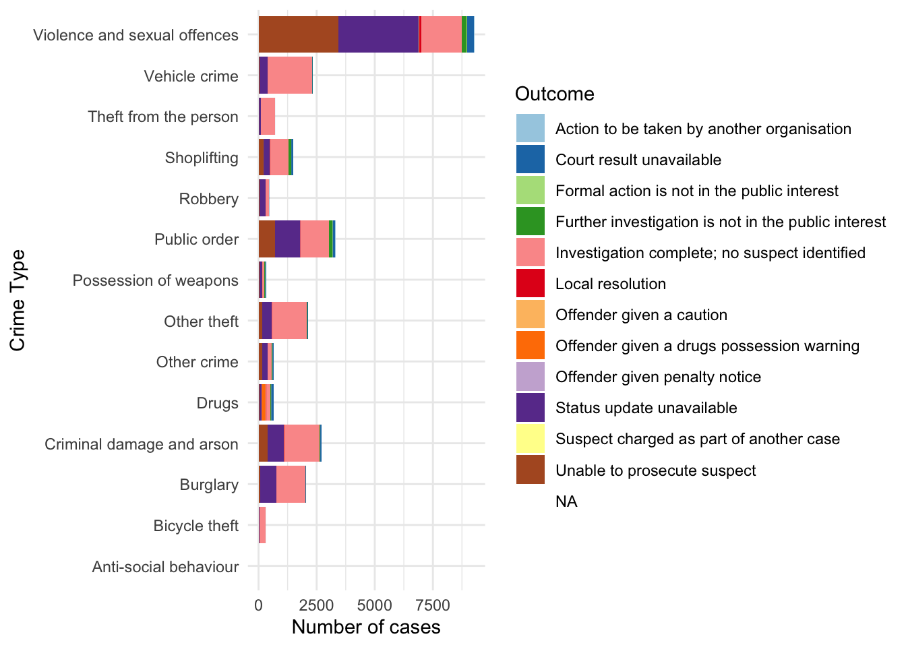

Chapter 2 
 As indicated above, the window in the bottom left corner is the main console.You will see that the words “I love maps” appear printed there. If rather than using R Studio you were working directly from R, that’s all you would get: the main console where you can write code interactively (rather than all the different windows you see in R Studio). You can write your code directly in the main console and execute it line by line in an interactive fashion. However, we will be running code from scripts, so that you get used to the idea of properly documenting all the steps you take,
As indicated above, the window in the bottom left corner is the main console.You will see that the words “I love maps” appear printed there. If rather than using R Studio you were working directly from R, that’s all you would get: the main console where you can write code interactively (rather than all the different windows you see in R Studio). You can write your code directly in the main console and execute it line by line in an interactive fashion. However, we will be running code from scripts, so that you get used to the idea of properly documenting all the steps you take,
2.0.1 Functions
Functions do things. They are called by a certain name, usually a name which represents what they do, and they are followed by brackets (). Within the brackets, you can put whatever it is that you want the function to work with. For example, the code we wrote in Activity 4 was the print() function. This function told R to print into the console whatever we put in the brackets (“Hello World!”).
Same idea with a personalised greeting: if you want to print ‘Hello Reka,’ you will need to have “Hello Reka” inside the brackets:
print("Hello Reka")## [1] "Hello Reka"There are so many functions in R. We will be learning many of them throughout our class. Print is fun, but most of the time, we will be using functions to help us with our data analysis. For example, getting the minimum, maximum, or mean of a list of numbers. R does this using functions in a very similar way.
For example, if we have a bunch of numbers, we just find the appropriate function to get the summary we want:
mean(10, 34, 5, 3, 77)## [1] 10min(10, 34, 5, 3, 77)## [1] 3max(10, 34, 5, 3, 77)## [1] 77How can you find the function you need? Throughout this class, you will learn a list that appears at the top of each lesson. A recommendation is to also create a ‘function cookbook,’ where you write down a list of functions, what the functions do, and some examples. Here is an example:

You can use google to make your cookbook, and the website stackoverflow, in particular, can help you find the function you need. But be wary, especially in the beginning, that you understand what the function does. There can be several different functions for the same action. One good approach is to add a function of interest to your cookbook and ask the teaching team about what it does, and how it might be different to other functions that do the same thing.
2.0.1.1 Activity 5: Play around with functions
Have a guess (or google) about what you think is the function to get the median. Once you have your answer, write it in the shared google docs. Then, use it to get the median of the numbers 10, 34, 5, 3, 77.
Write the answer in your shared google doc (or note it down for yourself if in the quiet room).
The answer is further below, after the note:
NOTE: R is case-sensitive! For example:
# Calculating the logarithm
Log(100)
# ERROR!# Instead, it should be:
log(100)## [1] 4.60517Okay, now you know these, the answer to Activity 6 was…
median(10, 34, 5, 3, 77)## [1] 10Now let us move on to our second key topic: objects!
2.0.2 Objects
Everything that exists in R is an object. Think of objects as boxes where you put things in. Imagine a big, empty cardboard box. We can create this big empty box in R by simply giving it a name. Usually, you want your object/box to have a good descriptive name, which will tell people what is in it. Imagine moving house. If you have a cardboard box full of places, you might want to label it “plates.” That way, when carrying, you know to be careful, and when unpacking, you know its contents will go in the kitchen. On the other hand, if you named it “box1,” then this is a lot less helpful when it comes to unpacking.
2.0.2.1 Activity 6: Creating an object
Let us create an object called ‘plates.’ To do this, you go to your script, and type ‘plates.’

But if you run this code, you will get an error. Let’s see:

You see the error ‘Error! Object plates not found.’ This is because you have not yet put anything inside the plates ‘box.’ Remember objects are like boxes,so there must be something inside our object ‘plates.’ In order for this object to exist, you have to put something inside it, or in R-speak assign it some value.
Therefore, we make an object by using an assignment operator ( <- ). In other words, we assign something to an object (i.e., put something in the box). For example:
plates <- "yellow plate"Now if we run this, we will see no error message, but instead, we will see the plates object appear in our environment pane:

Here are some more examples to illustrate:
# Putting '10' in the 'a' box
a <- 10
# Putting 'Hello!' in the 'abc123' box
abc123 <- "Hello!"In these examples, we are putting the value of 10 into the object a, and the value of ‘Hello!’ into the object abc123.
Earlier, we introduced you to the Environment and History pane. We mentioned that it lists objects you defined. After making the ‘a’ and ‘abc123’ objects, they should appear in that very pane under the Environment tab.
2.0.2.2 Types of objects
Why are objects important? We will be storing everything in our data analysis process in these objects. Depending on what is inside them, they can become a different type of object. Here are some examples:
Data structures are important objects that store your data, and there are five main types but we focus on three for this course:
- (atomic) vector: an ordered set of elements that are of the same class. Vectors are a basic data structure in
R. Below are five different classes of vectors:
# 1. numeric vector with three elements
my_1st_vector <- c(0.5, 8.9, 0.6)
# 2. integer vector with addition of L at the end of the value
my_2nd_vector <- c(1L, 2L, 3L)
# 3. logical vector
my_3rd_vector <- c(TRUE, FALSE, FALSE)
# 'my_4th_vector' creates a logical vector using abbreviations of True and False, but you should use the full words instead
my_4th_vector <- c(T, F)
# 4. character vector
my_5th_vector <- c("a", "b", "c")
# 5. complex vector (we will not use this for our class)
my_6th_vector <- c(1+0i, 2+4i) - lists: technically they, too, are vectors but they are more complex because they are not restricted on the length, structure, or class of the included elements. For example, to create a list containing strings, numbers, vectors and a logical, use the
list()function, and inside the brackets, put everything tat you want to combine into a list:
list_data <- list("teal", "sky blue", c(10, 5, 10), TRUE, 68.26, 95.46, 99.7) Above, we created list_data, an object that contains all those things that we put inside the list() function. This function serves to create a list from combining everything that is put inside its brackets.
Use the class() function to confirm that the objects have been defined as a list
class(list_data)## [1] "list"- data frames: also stores elements but differ from lists because they are defined by their number of columns and rows; the vectors (columns) must be of the same length. Data frames can contain different classes but each column must be of the same class. For example, if you want to combine some related vectors to make a data frame on violent American cities, use the function
data.frame():
# Making some relevant vectors
TopVioCities <- c("St. Louis", "Detroit", "Baltimore") # some violent US cities
VioRatePer1k = c(20.8, 20.6, 20.3) # their violence rates per 1,000 persons
State <- c("Missouri", "Michigan", "Maryland") # in what states are these cities found
#Join them to make a data frame called 'df'
df<-data.frame(TopVioCities, VioRatePer1k, State)We can then view the data frame, ‘df,’ with the View() function:
View(df)2.0.2.3 Activity 7: Doing things to objects
We have learned what functions are (i.e., things that do things) and what are objects (i.e., the boxes that hold things). We also saw some functions which helped us create objects. Functions can also do things to objects. For example, we saw the function class() that told us about what kind of object list_data was, and View() which allowed us to have a look at our dataframe we called df.
Let us look back at our plates object. Remember it was the object that held our kitchen items. We added ‘yellow plate’ to it. Now let us add some more items and let us use the concatenate c() function for this again:
plates <- c("yellow plate", "purple plate", "silver plate", "orange bowl")Let us say that we suddenly forgot what was in our object called ‘plates.’ Like what we learned earlier, we use the function print() to see what is inside this object:
print(plates)## [1] "yellow plate" "purple plate" "silver plate" "orange bowl"This can apply to obtaining the mean, the minimum, and maximum. You could assign those statistics to an object this time:
nums <- c(10, 34, 5, 3, 77)Now if we want to know the mean, we can take the mean of the object nums, which we just created:
mean(nums)## [1] 25.8The object we will use most frequently though is data frames. These hold your data in a format whereby each column represents a variable, and each row an observation.
Just earlier, we had created a dataframe called df previously. If you have not yet copied this over into your own R Studio, do this now. You should have the object df in your environment. When you run View(df), you should see this dataset:

To do something to an entire dataframe, we would use the name of the object (df) to refer to it. In the case of the View() function, we want to see the whole thing, so we will call View(df). On the other hand, if we want to refer to only one variable in the data, (remember back to term 1 - each varible is held in each column) there is a special notation to do this.
To refer to a variable (column) inside a dataframe, you use:
\(dataframe name + \$ + variable name\)
For example, to refer to the variable VioRatePer1k, we use the notation df$VioRatePer1k.
And if we wanted to View only that column, we use:
View(df$VioRatePer1k)You should see:

Say we wanted to know the mean violence rate across our units of analysis, the cities, for example, we would take the numeric column to calculate this:
mean(df$VioRatePer1k)## [1] 20.566672.1 Packages
Packages are a very important element of R.
Packages are elements that add the functionality of R. What most packages do is they introduce new functions that allow you to ask R to do new different things. Anybody can write a package, so consequently R packages vary on quality and complexity. You can find packages in different places, as well, from official repositories (which means they have passed a minimum of quality control), something called Git Hub (a webpage where software developers post work in progress), to personal webpages (danger danger!).
Throughout the course, and hopefully afterwards, you will find yourself installing numerous open source software packages that allow R to do new and different things. There are loads of packages out there. In early 2020, there were over 150,000 packages available. Anyone can write one, so you will need to be careful on which ones you use as the quality can vary. Official repositories, like CRAN, are your best bet for packages as they will have passed some quality controls.
You can see what packages are available in your local install by looking at the packages tab in the File directory, Plots, Packages pane.

A number of the packages we will use belong to a set of packages called tidyverse. These packages help make your data tidy. According to Statistician and Chief Scientist at RStudio, Hadley Wickham, transforming your data into tidy data is one of the most important steps of the data analysis process. It will ensure your data are in the format you need to conduct your analyses. We will also be using the simple features package sf and many more associated with spatial data analysis.
Packages can be installed using the install.packages() function. Remember that while you only need to install packages once, they need to be loaded with the library()function each time you open up RStudio. Let us install the package dplyr from tidyverse and load it:
library(dplyr)##
## Attaching package: 'dplyr'## The following objects are masked from 'package:stats':
##
## filter, lag## The following objects are masked from 'package:base':
##
## intersect, setdiff, setequal, unionA lot of code and activity appears in the console. Warnings may manifest. Most of the time, the warnings explain what is being loaded and confirm that the package is successfully loaded. If there is an error, you will have to figure out what the warnings are telling you to successfully load the package. This happens and is normal.
To double check that you have actually installed dplyr, go to that File Directory, Plots, Packages pane and click on the Packages tab. The list of packages is in alphabetical order and dplyr should be there. If there is a tick in its box, it means that this package is currently loaded and you can use it; if there is no tick, it means that it is inactive, and you will have to bring it up with library(), or just tick its box (Figure 1.6).

On masking: sometimes packages introduce functions that have the same name as those that are already loaded into your session. When that happens, the newly loaded ones will override the previous ones. You can still use them but you will have to refer to them explicitly by bringing them up by specifying to which package they belong with library().
How do you find out what a package does? You look at the relevant documentation. In the Packages window scroll down until you find the new package we installed listed. Here you will see the name of the package (dplyr), a brief description of what the program is about, and the version you have installed (an indication that a package is a good package is that it has gone through several versions, that means that someone is making sure the package gets regular updates and improvements).
Click in the name dplyr. You will see that R Studio has now brought you to the Help tab. Here is where you find the help files for this package, including all the available documentation.
Every beginner in R will find these help files a bit confusing. But after a while, their format and structure will begin to make sense to you. Click where it says User guides, package vignettes, and other documentation. Documentation in R has become much better since people started to write vignettes for their packages. They are little tutorials that explain with examples what each package does. Click in the cowsay::cowsay_tutorial that you see listed here (the html link). What you will find there is an html file that gives you a detailed tutorial on this package. You don’t need to read it now, but remember that this is one way to find help when using R. You will learn to love vignettes.
2.2 Exploring data
Now that we know the basic component, let’s play around with using R as we will throughout the course, for some data analysis.
We will get some data by installing a package which has data in it as well as functions, and then go on to produce some basic summaries. This should give some practice!
2.2.1 Activity 8: Playing around with data
We are going to look at some data that are part of the fivethirtyeight package. This package contains data sets and code behind the stories in this particular online newspaper. This package is not part of the base installation of R, so you will need to install it first. I won’t give you the code for it. See if you can figure it out by looking at previous examples. Discuss and write in the google doc what you think the code will be.
Done? Ok, now we are going to look at the data sets that are included in this package. Remember first we have to load the package if we want to use it:
library("fivethirtyeight")## Some larger datasets need to be installed separately, like senators and
## house_district_forecast. To install these, we recommend you install the
## fivethirtyeightdata package by running:
## install.packages('fivethirtyeightdata', repos =
## 'https://fivethirtyeightdata.github.io/drat/', type = 'source')data(package="fivethirtyeight") #This function will return all the data frames that are available in the named package.Notice that this package has some data sets that relate to stories covered in this newspaper that had a criminological angle. Let’s look for example at the hate_crimes data set. How do you that? First we have to load the data frame into our global environment. To do so use the following code:
data("hate_crimes")This function will search among all the loaded packages and locate the hate_crimes data set. Notice that it now appears in the global environment, although it also says “promise” next to it. To see the data in full you need to do something to it first. So let’s do that.
Every object in R can have attributes. These are: names; dimensions (for matrices and arrays: number of rows and columns) and dimensions names; class of object (numeric, character, etc.); length (for a vector this will be the number of elements in the vector); and other user-defined. You can access the attributes of an object using the attributes() function. Let’s query R for the attributes of this data frame.
attributes(hate_crimes)## $row.names
## [1] 1 2 3 4 5 6 7 8 9 10 11 12 13 14 15 16 17 18 19 20 21 22 23 24 25
## [26] 26 27 28 29 30 31 32 33 34 35 36 37 38 39 40 41 42 43 44 45 46 47 48 49 50
## [51] 51
##
## $class
## [1] "tbl_df" "tbl" "data.frame"
##
## $names
## [1] "state" "state_abbrev"
## [3] "median_house_inc" "share_unemp_seas"
## [5] "share_pop_metro" "share_pop_hs"
## [7] "share_non_citizen" "share_white_poverty"
## [9] "gini_index" "share_non_white"
## [11] "share_vote_trump" "hate_crimes_per_100k_splc"
## [13] "avg_hatecrimes_per_100k_fbi"This prints out the row names (not very exciting here..) the class (see above when we used class() function) and the names, which are the column headers - or the names of the variables within this data set. You can see there are things like state, and share who voted trump (in the 2016 election, not most recent!).
Now use the View() function to glance at your data frame. What you get there is a spreadsheet with 12 variables and 51 observations. Each variable in this case is providing you with information (demographics, voting patterns, and hate crime) about each of the US states.
Ok, let’s now have a quick look at the data. There are so many different ways of producing summary stats for data stored in R that is impossible to cover them all! We will just introduce a few functions that you may find useful for summarising data. Before we do any of that it is important you get a sense for what is available in this data set. Go to the help tab and in the search box input the name of the data frame, this will take you to the documentation for this data frame. Here you can see a list of the available variables.

Let’s start with the mean. This function takes as an argument the numeric variable for which you want to obtain the mean. You have done this above, so it should be familiar now! If you want to obtain the mean of the variable that gives us the proportion of people that voted for Donald Trump you can use the following expression:
mean(hate_crimes$share_vote_trump)## [1] 0.49Another function you may want to use with numeric variables is summary():
summary(hate_crimes$share_vote_trump)## Min. 1st Qu. Median Mean 3rd Qu. Max.
## 0.040 0.415 0.490 0.490 0.575 0.700This gives you the five number summary (minimum, first quartile, median, third quartile, and maximum, plus the mean and the count of missing values if there are any).
You don’t have to specify a variable you can ask for these summaries from the whole data frame:
summary(hate_crimes)## state state_abbrev median_house_inc share_unemp_seas
## Length:51 Length:51 Min. :35521 Min. :0.02800
## Class :character Class :character 1st Qu.:48657 1st Qu.:0.04200
## Mode :character Mode :character Median :54916 Median :0.05100
## Mean :55224 Mean :0.04957
## 3rd Qu.:60719 3rd Qu.:0.05750
## Max. :76165 Max. :0.07300
##
## share_pop_metro share_pop_hs share_non_citizen share_white_poverty
## Min. :0.3100 Min. :0.7990 Min. :0.01000 Min. :0.04000
## 1st Qu.:0.6300 1st Qu.:0.8405 1st Qu.:0.03000 1st Qu.:0.07500
## Median :0.7900 Median :0.8740 Median :0.04500 Median :0.09000
## Mean :0.7502 Mean :0.8691 Mean :0.05458 Mean :0.09176
## 3rd Qu.:0.8950 3rd Qu.:0.8980 3rd Qu.:0.08000 3rd Qu.:0.10000
## Max. :1.0000 Max. :0.9180 Max. :0.13000 Max. :0.17000
## NA's :3
## gini_index share_non_white share_vote_trump hate_crimes_per_100k_splc
## Min. :0.4190 Min. :0.0600 Min. :0.040 Min. :0.06745
## 1st Qu.:0.4400 1st Qu.:0.1950 1st Qu.:0.415 1st Qu.:0.14271
## Median :0.4540 Median :0.2800 Median :0.490 Median :0.22620
## Mean :0.4538 Mean :0.3157 Mean :0.490 Mean :0.30409
## 3rd Qu.:0.4665 3rd Qu.:0.4200 3rd Qu.:0.575 3rd Qu.:0.35694
## Max. :0.5320 Max. :0.8100 Max. :0.700 Max. :1.52230
## NA's :4
## avg_hatecrimes_per_100k_fbi
## Min. : 0.2669
## 1st Qu.: 1.2931
## Median : 1.9871
## Mean : 2.3676
## 3rd Qu.: 3.1843
## Max. :10.9535
## NA's :1There are multiple ways of getting results in R. Particularly for basic and intermediate-level statistical analysis many core functions and packages can give you the answer that you are looking for. For example, there are a variety of packages that allow you to look at summary statistics using functions defined within those packages. You will need to install these packages before you can use them.
I am only going to introduce one of them here skimr. You will need to install it before anything else.
Once you have loaded the skimr package you can use it. Its main function is skim. Like summary for data frames, skim presents results for all the columns and the statistics will depend on the class of the variable.
skim(hate_crimes)Hopefully in your statistical modules you had taken previously, you have learned some things about how to graphically display variables. So you may have some memory about the amount of work involved with this. Hopefully R will offer some respite. Of course, there are many different ways of producing graphics in R. In this course we rely on a package called ggplot2, which is part of the tidyverse set of packages mentioned earlier.
library(ggplot2)Then we will use one of its functions to create a scatterplot.
ggplot(hate_crimes, aes(x=share_vote_trump, y=avg_hatecrimes_per_100k_fbi)) +
geom_point(shape=1) +
geom_smooth(method=lm)## `geom_smooth()` using formula 'y ~ x'## Warning: Removed 1 rows containing non-finite values (stat_smooth).## Warning: Removed 1 rows containing missing values (geom_point).
What do you think this graphic is telling you? Discuss and write in your shared google docs.
Graphing is very powerful in R, and much of the spatial visualisation we will produce throughout the module will build on this. If you are not already familiar with this, I recommend a read of the data visualisation chapter of R for Data Science https://r4ds.had.co.nz/data-visualisation.html
2.3 Getting organised: R Projects
One thing that can help you tremendously throughout this module is keeping your code organised.R Studio helps with this by virtue of something called R Projects.
Technically, a R Studio project is just a directory with the name of the project, and a few files and folders created by R Studio for internal purposes. This is where you should hold your scripts, your data, and reports. You can manage this folder with your own operating system manager (discussed earlier, e.g., Windows) or through the R Studio file manager (that you access in the bottom right corner set of windows in R Studio).
When a project is reopened, R Studio opens every file and data view that was open when the project was closed last time around. Trust me, this is a really helpful thing! If you create a project for this module, you can keep everything in once place, and refer back to your old code and your learnings throughout the module.
2.3.0.1 Activity 9: Saving your work and projects
First things first, hopefully you have already created a separate folder on your desktop, or dropbox, or something like this. Now save the script you’ve been working on into this folder. By clicking on “File” and “Save as….”

Then navigate to your folder for this module, and for your script make sure to give it some meaningful name like week1lab.R or something like this. Then click ‘save.’

Now, go back to “File” and select “New project…”

Then in the options that appear choose “Existing Directory.” This is because you already have a folder for this work, this is where you saved your script just before. For me this was my folder called ‘crime_mapping’ you saw above.

So select ‘Existing Directory,’ and on the next page use the “Browse” button to select this folder (the directory) where you saved the script earlier. Once you have done this, click on ‘Create Project’ on the bottom.
This will now open up a new R Studio window with your project. In the future, you can start right back up where you finished last time by navigating to the .Rproj file, and double clicking it. It helps you keep everything in one place, and lets R read everything from that folder.
With simple projects a single script file and a data file is all you may have. But with more complex projects, things can rapidly become messy. So you may want to create subdirectories within this project folder. I typically use the following structure in my own work to put all files of a certain type in the same subdirectory:
Scripts and code: Here I put all the text files with my analytic code, including rmarkdown files which is something we will introduce much later in the semester.
Source data: Here I put the original data. I tend not to touch this once I have obtained the original data.
Documentation: This is the subdirectory where I place all the data documentation (e.g., codebooks, questionnaires, etc.)
Modified data: All analysis involve doing transformations and changing things in the original data files. You don’t want to mess up the original data files, so what you should do is create new data files as soon as you start changing your source data. I go so far as to place them in a different subdirectory.
Literature: Analysis is all about answering research questions. There is always a literature about these questions. I place the relevant literature for the analytic project I am conducting in this subdirectory.
Reports and write up: Here is where I file all the reports and data visualisations that are associated with my analysis.
If you come to my office, you will see it is a very messy place. But my computer is, in contrast, a very tidy environment. You should aim for your computer workspace to be very organised as well.
You can read up here on why projects are useful here: https://www.r-bloggers.com/2020/01/rstudio-projects-and-working-directories-a-beginners-guide/
This week we will start making some maps in R, and learn about how we can take regular crime data, and assign the appropriate geometry for our chosen unit of analysis. We will produce some maps, using possibly familiar ggplot notation, and learn some key terms around projectsion and coordinate reference systems which will be essential for your work in the coming weeks.
Today we will use the following packages, so make sure you have them downloaded:
readertibblejanitorsfggplot2ggspatialdplyr
2.4 A quick introduction of terms
2.4.1 Geospatial Perspective - The Basics
Geospatial analysis provides a distinct perspective on the world, a unique lens through which to examine events, patterns, and processes that operate on or near the surface of our planet. Ultimately geospatial analysis concerns what happens where, and makes use of geographic information that links features and phenomena on the Earth’s surface to their locations.
We can talk about a few different concepts when it comes to spatial information. These are:
- Place
- Attributes
- Objects
2.4.1.1 Place
At the center of all spatial analysis is the concept of place. People identify with places of various sizes and shapes, from the room with the parcel of land, to the neighbourhood, to the city, the country, the state or the nation state. Places often have names, and people use these to talk about and distinguish names. Names can be official. Places also change continually as people move. The basis of rigorous and precise definition of place is a coordinate system, a set of measurements that allows place to be specified unambiguously and in a way that is meaningful to everyone.
2.4.1.2 Attributes
Attribute has become the preferred term for any recorded characteristic or property of a place. A place’s name is an obvious example of an attribute. But there can be other pieces of information, such as number of crimes in a neighbourhood, or the GDP of a country. Within GIS the term ‘attributes’ usually refers to records in a data table associated with individual elements in a vector map or cells in a grid (raster or image file). These data behave exactly as data you have encountered in your past experience. The rows represent observations, and the columns represent variables. The variables can be numeric or categorical, and depending on what they are, you can apply different methods to making sense of them. The difference with other kind of data table is that the observations, your rows, correspond to places or locations.
2.4.1.3 Objects
In spatial analysis it is customary to refer to places as objects. These objects can be a whole country, or a road. In forestry, the objects of interest might be trees, and their location will be represented as points. On the other hand, studies of social or economic patterns may need to consider the two-dimensional extent of places, which will therefore be represented as areas. These representations of the world are part of what is called the vector data model: A representation of the world using points, lines, and polygons. Vector models are useful for storing data that have discrete boundaries, such as country borders, land parcels, and streets. This is made up of points, lines, and areas (polygons):
- Points
- Points are pairs of coordinates, in latitude/longitude or some other standard system
- Lines
- Lines are ordered sequences of points connected by straight lines
- Areas (polygons)
- Areas are ordered rings of points, also connected by straight lines to form polygons. It can contain holes, or be linked with separate islands.

Objects can also be raster data. Raster data is made up of pixels (or cells), and each pixel has an associated value. Simplifying slightly, a digital photograph is an example of a raster dataset where each pixel value corresponds to a particular colour. In GIS, the pixel values may represent elevation above sea level, or chemical concentrations, or rainfall etc. The key point is that all of this data is represented as a grid of (usually square) cells.
2.4.1.4 Networks
We already mentioned lines that constitute objects of spatial data, such as streets, roads, railroads, etc. Networks constitute one-dimensional structures embedded in two or three dimensions. Discrete point objects may be distributed on the network, representing phenomena such as landmarks, or observation points. Mathematically, a network forms a graph, and many techniques developed for graphs have application to networks. These include various ways of measuring a network’s connectivity, or of finding the shortest path between pairs of points on a network. You can have a look at the lesson on network analysis in the QGIS documentation
2.4.1.5 Maps: reference and thematic maps
Historically maps have been the primary means to store and communicate spatial data. Objects and their attributes can be readily depicted, and the human eye can quickly discern patterns and anomalies in a well-designed map.
In GIS we distinguish between reference and thematic maps. A reference map places the emphasis on the location of spatial objects such as cities, mountains, rivers, parks, etc. You use these maps to orient yourself in space and find out the location of particular places. Thematic maps, on the other hand, are about the spatial distribution of attributes or statistics. For example, the number of crimes across different neighbourhouds. Our focus in this book is on thematic maps.
2.4.1.6 Map projections and geographic coordinate systems
Whenever we put something into a map we need some sort of system to pinpoint the location. A coordinate system allows you to integrate any dataset with other geographical datasets within a common framework. There are hundreds of them. It is common to distinguish between geographic coordinate systems and projected coordinate systems. A geographic coordinate system is a three dimensional reference system that enables you to locate any location on earth. Often this is done with longitude, latitute and elevation. Projected coordinate systems or map projections, on the other hand, try to portray the surface of the earth or a portion of the earth on a two dimensional flat piece of paper or computer screen.
All projections of a sphere like the earth in a two dimensional map involve some sort of distortion. You can’t fit a three dimensional object into two dimensions without doing so. Projections differ to a large extent on the kind of distortion that they introduce. The decision as to which map projection and coordinate reference system to use, depends on the regional extent of the area you want to work in, on the analysis you want to do and often on the availability of data. Knowing the system you use would allow you to translate your data into other systems whenever this may be necessary. Often you may have to integrate data that is provided to you in different coordinate or projected systems. As long as you know the systems, you can do this.
[Footnote to this for more detail: https://www.youtube.com/watch?v=6tmDxTAjux0]
A traditional method of representing the earth’s shape is the use of globes. When viewed at close range the earth appears to be relatively flat. However when viewed from space, we can see that the earth is relatively spherical. Maps, are representations of reality. They are designed to not only represent features, but also their shape and spatial arrangement. Each map projection has advantages and disadvantages. The best projection for a map depends on the scale of the map, and on the purposes for which it will be used. For your purposes, you just need to understand that essentially there are different ways to flatten out the earth, in order to get it into a 2-dimensional map.
The process of creating map projections can be visualised by positioning a light source inside a transparent globe on which opaque earth features are placed. Then project the feature outlines onto a two-dimensional flat piece of paper. Different ways of projecting can be produced by surrounding the globe in a cylindrical fashion, as a cone, or even as a flat surface. Each of these methods produces what is called a map projection family. Therefore, there is a family of planar projections, a family of cylindrical projections, and another called conical projections.

figure_projection_families
With the help of coordinate reference systems (CRS) every place on the earth can be specified by a set of three numbers, called coordinates. In general CRS can be divided into projected coordinate reference systems (also called Cartesian or rectangular coordinate reference systems) and geographic coordinate reference systems.
The use of Geographic Coordinate Reference Systems is very common. They use degrees of latitude and longitude and sometimes also a height value to describe a location on the earth’s surface. The most popular is called WGS 84. This is the one you will most likely be using, and if you get your data in latitude and longitude, then this is the CRS you are working in. It is also possible that you will be using a projected CRS. This two-dimensional coordinate reference system is commonly defined by two axes. At right angles to each other, they form a so called XY-plane. The horizontal axis is normally labelled X, and the vertical axis is normally labelled Y.
Working with data in the UK, on the other hand, you are most likely to be using British National Grid (BNG). The Ordnance Survey National Grid reference system is a system of geographic grid references used in Great Britain, different from using Latitude and Longitude. In this case, points will be defined by “Easting” and “Northing” rather than “Longitude” and “Latitude.” It basically divides the UK into a series of squares, and uses references to these to locate something. The most common usage is the six figure grid reference, employing three digits in each coordinate to determine a 100 m square. For example, the grid reference of the 100 m square containing the summit of Ben Nevis is NN 166 712. Grid references may also be quoted as a pair of numbers: eastings then northings in meters, measured from the southwest corner of the SV square. For example, the grid reference for Sullom Voe oil terminal in the Shetland Islands may be given as HU396753 or 439668,1175316

BNG
This will be important later on when we are linking data from different projections, or when you look at your map and you try to figure out why it might look “squished.”
2.4.1.7 Density estimation
One of the more useful concepts in spatial analysis is density - the density of humans in a crowded city, or the density of retail stores in a shopping centre. Mathematically, the density of some kind of object is calculated by counting the number of such objects in an area, and dividing by the size of the area. To read more about this, I recommend Silverman, Bernard W. Density estimation for statistics and data analysis. Vol. 26. CRC press, 1986.
2.4.2 Summary
Right so hopefully this gives you a few things to think about. Be sure that you are confident to know about:
- Spatial objects - what they are and how they are represented
- Attributes - the bits of information that belong to your spatial objects
- Maps and projections - especially what WSG84 and BNG mean, and why it’s important that you know what CRS your data have
2.5 Getting some spatial data to put on a map
Alright let’s get some practical experience where we take some crime data, and find out how we can put it on the map!
2.5.1 Find some relevant data to show: obtaining data on crime
For your first crime map, we better get some real world crime data. This can be done for the UK easily, as anonymised open crime data are released for the public to use. We can play around with police recorded crime data, which can be downloaded from the police.uk website.
Let’s download some data for crime in Manchester.
2.5.2 Activity 1: Get some crime data
To do acquire the data, open the data.police.uk/data website. Choose the data tab, in order to download some data.
- In
Date rangejust select one month of data. Choose whatever month you like EXCEPT nothing more recent than June 2019. Unfortunately, for GMP there is no more recent data available than that. This is because they are having some serious IT issues see this article which apparently have disrupted this flow of data. - In
ForcefindGreater Manchester Police, and tick the box next to it. - In
Data setstickInclude crime data. - Finally click on
Generate Filebutton.
This will take you to a download page, where you have to click the Download now button. This will open a dialogue to save a .zip file. Navigate to the project directory folder you’ve created and save it there, ideally in a subfolder. I call my subfolder ‘data.’
Unzip the file. You can use the unzip function for this. A cool function you may want to use as well is file.choose(). If we pass this function as an argument to unzip(), we will get a pop window where we will be able to select our file using familiar point and click. Ideally, you want to rather write down the path to your file. But sometimes these shortcuts are convenient.
unzip(file.choose())If you look at the Files window in the bottom right corner of RStudio you should see now a new subdirectory that contains a .csv file with the data that we need. Since I downloaded the data from June 2019 in my case this subdirectory is called 2019-06.
Before we can use this data we need to read it or import it into R and turn it into a dataframe object. To read in the .csv file, which is the format we just downloaded, the command is read_csv() from the readr package. You’ll need to load this package first.
library(readr)Again there are two ways to read in the data, if you want to open a window where you can manually navigate and open the file, you can pass file.choose() argument to the read_csv() function as illustrated earlier.
#This code creates a dataframe object called crimes which will include the spreadsheet in the file we have downloaded. In my case, that is 2007-11-greater-manchester-street.csv.
crimes <- read_csv(file.choose())
m # Print the mapOr, if you know the path to your file, you can code it in there, within quotation marks:
crimes <- read_csv("data/2019-06-greater-manchester-street.csv")##
## ── Column specification ────────────────────────────────────────────────────────
## cols(
## `Crime ID` = col_character(),
## Month = col_character(),
## `Reported by` = col_character(),
## `Falls within` = col_character(),
## Longitude = col_double(),
## Latitude = col_double(),
## Location = col_character(),
## `LSOA code` = col_character(),
## `LSOA name` = col_character(),
## `Crime type` = col_character(),
## `Last outcome category` = col_character(),
## Context = col_logical()
## )You might notice that the object crimes has appeared in your work environment window. It will tell you how many observations (rows - and incidentally the number of recorded crimes in June 2019 within the GMP jurisdiction) and how many variables (columns) your data has.
Let’s have a look at the crimes dataframe with the View() function. This will open the data browser in RStudio
View(crimes)If you rather just want your results in the console, you can use the glimpse() function from the tibble package. This function does just that, it gives you a quick glimpse of the first few cases in the dataframe. Notice that there are two columns (Longitude and Latitude) that provide the require geographical coordinates that we need to plot this data.
library(tibble)
glimpse(crimes)## Rows: 32,058
## Columns: 12
## $ `Crime ID` <chr> NA, "aa1cc4cb0c436f463635890bcb4ff2cba08f5992…
## $ Month <chr> "2019-06", "2019-06", "2019-06", "2019-06", "…
## $ `Reported by` <chr> "Greater Manchester Police", "Greater Manches…
## $ `Falls within` <chr> "Greater Manchester Police", "Greater Manches…
## $ Longitude <dbl> -2.464422, -2.441166, -2.444807, -2.444807, -…
## $ Latitude <dbl> 53.61250, 53.61604, 53.61151, 53.61151, 53.60…
## $ Location <chr> "On or near Parking Area", "On or near Pitcom…
## $ `LSOA code` <chr> "E01004768", "E01004768", "E01004768", "E0100…
## $ `LSOA name` <chr> "Bolton 001A", "Bolton 001A", "Bolton 001A", …
## $ `Crime type` <chr> "Anti-social behaviour", "Violence and sexual…
## $ `Last outcome category` <chr> NA, "Unable to prosecute suspect", "Unable to…
## $ Context <lgl> NA, NA, NA, NA, NA, NA, NA, NA, NA, NA, NA, N…You may notice that a lot of the variable names are messy in that they have a space in them - this can cause issues, so before playing around too much with the data we want to clean this up.
Luckily there is a very handy package you can use for this called janitor which contains the function clean_names().
library(janitor)##
## Attaching package: 'janitor'## The following objects are masked from 'package:stats':
##
## chisq.test, fisher.testcrimes <- clean_names(crimes)Now the names are much neater. You can print them all for a view using the names() function:
names(crimes)## [1] "crime_id" "month" "reported_by"
## [4] "falls_within" "longitude" "latitude"
## [7] "location" "lsoa_code" "lsoa_name"
## [10] "crime_type" "last_outcome_category" "context"So what you see above is what we can call a basemap. The term basemap is seen often in GIS and refers to a collection of GIS data and/or orthorectified imagery that form the background setting for a map. The function of the basemap is to provide background detail necessary to orient the location of the map. Basemaps also add to the aesthetic appeal of a map.
2.6 From dataframes to spatial objects: finding spatial information in our data
Having had a chance to inspect the data set you’ve downloaded, let’s consider what sort of spatial information we might be able to use.
2.6.1 Activity 2: Find the spatial data
If you have a look at the column names, what are some of the variables which you think might have some spatial component? Have a think about each column, and how you think it may help to put these crimes on the map. Discuss in your groups, and add the answer to the shared google doc. Once you are done, read on.
So what did you decide in your discussion? There are a few answers here.
In fact there are one each to map onto point, line, and polygon, which we read about earlier.
2.6.2 The point
First, and possibly most obvious, are the coordinates provided with each crime incident recorded. You can find this in the two columns - Longitude and Latitude. These two column help put each crime incident on a specific point on a map. For example, let’s take the very first crime incident. Here we use the head() function and specify that we want the first 1 rows only with n=1 parameter.
head(crimes, n = 1)## # A tibble: 1 x 12
## crime_id month reported_by falls_within longitude latitude location lsoa_code
## <chr> <chr> <chr> <chr> <dbl> <dbl> <chr> <chr>
## 1 <NA> 2019… Greater Ma… Greater Man… -2.46 53.6 On or n… E01004768
## # … with 4 more variables: lsoa_name <chr>, crime_type <chr>,
## # last_outcome_category <chr>, context <lgl>You can see that the values are for Longitude and for Latitude. These two numbers allow us to put this point on a map.
2.6.3 The line
Another column which contains information about where the crime happened is the aptly named location variable. This shows you a list of locations related to where the crimes happened. You may see a few values such as on or near XYZ street. Let’s look again at the first entry.
head(crimes, n = 1)## # A tibble: 1 x 12
## crime_id month reported_by falls_within longitude latitude location lsoa_code
## <chr> <chr> <chr> <chr> <dbl> <dbl> <chr> <chr>
## 1 <NA> 2019… Greater Ma… Greater Man… -2.46 53.6 On or n… E01004768
## # … with 4 more variables: lsoa_name <chr>, crime_type <chr>,
## # last_outcome_category <chr>, context <lgl>You can see that the value is this isn’t great, as we might struggle to identify which parking area… Some other ones are more useful, let’s look at the last entry for example with the tail() function.
tail(crimes, n = 1)## # A tibble: 1 x 12
## crime_id month reported_by falls_within longitude latitude location lsoa_code
## <chr> <chr> <chr> <chr> <dbl> <dbl> <chr> <chr>
## 1 75e215f… 2019… Greater Ma… Greater Man… -2.57 53.5 On or n… E01006347
## # … with 4 more variables: lsoa_name <chr>, crime_type <chr>,
## # last_outcome_category <chr>, context <lgl>You can see that the value is . This makes our crime much easier to find, we just need to locate where is . We might have a shapefile of lines of all the roads of Manchester, and if we did, we can link the crime to that particular road, in order to map it.
2.6.4 The polygon
What more? You may also have seen the column lsao_name seems to have some spatial component, Let’s have a look at the first crime again.
head(crimes, n = 1)## # A tibble: 1 x 12
## crime_id month reported_by falls_within longitude latitude location lsoa_code
## <chr> <chr> <chr> <chr> <dbl> <dbl> <chr> <chr>
## 1 <NA> 2019… Greater Ma… Greater Man… -2.46 53.6 On or n… E01004768
## # … with 4 more variables: lsoa_name <chr>, crime_type <chr>,
## # last_outcome_category <chr>, context <lgl>You see the value for LSOA name is - Bolton we know is a Borough of Greater Manchester, but what is the 001 for ?
Well it denotes a sparticular geographical sub-unit within Bolton called a Lower Layer Super Output Area. This is a unit of UK Census Geography. The basic unit for Census Geography is an ‘Outout area’ - this is the resolution at which we can access data from the UK Census. We will be making use of census data later in the course. The Ourput Area (OA) is therefore the smallest unit we could use. Normally, in this module, we will be using a slightly larger version - the Lower Super Output Area (LSOA).
There are now 181,408 OAs, 34,753 lower layer super output areas (LSOA) and 7,201 middle layer super output areas (MSOA) in England and Wales. The neat thing about these Census geographies is the idea is that they don’t change (unlike administrative boundaries such as wards) and were created with statistical analysis in mind. The less neat thing is that although we use them to operationalise the concept of neighbourhood a lot, they may not bear much resemblance to what residesnts might think of as their neighbourhood. Think for a minute - do you know what LSOA you live in? Most likely you answered no. If you answered yes, I am impressed and you get geography nerd cred. Well done.
Anyway back to our crime data. You see we have two columns that reference LSOAs, lsoa_name and lsoa_code. We can use these to link our crime data to a shapefile of a polygon which contains the geometries needed to put the crime data on the map.
2.7 Putting crime on the map - simple features
So how can we use these spatial details to put our crimes on the map? We need to somehow specify a geometry for our data, which links each unit of analysis (whether that is the point, line, or polygon) to a relevant geographical representation, which allows us to put this thing on the map.
How you add geographical information will vary with the type of information we have, but in all of these, we will use the simple features framework.

(Illustration (c) by Allison Horst)
What are simple features? sf package author Edzer Pebesma describes simple features as a standardized way of encoding spatial vector data (points, lines, polygons) in computers. The sf package is an R package for reading, writing, handling, and manipulating simple features in R, implementing the vector (points, lines, polygons) data handling functionality.
Traditionally spatial analysis in R were done using the sp package which creates a particular way of storing spatial objects in R. When most packages for spatial data analysis in R and for thematic cartography were first developed sp was the only way to work with spatial data in R. There are more than 450 packages rely on sp, making it an important part of the R ecosystem. More recently a new package, sf (which stands for “simple features”), is revolutionising the way that R does spatial analysis. This new package provides a new way of storing spatial objects in R and most recent R packages for spatial analysis and cartography are using it as the new default. It is easy to transform sf objects into sp objects, so that those packages that still don’t use this new format can be used. But in this course we will emphasise the use of sf whenever possible. You can read more about the history of spatial packages and the sf package in the first two chapters of this book.
Features can be thought of as “things” or objects that have a spatial location or extent; they may be physical objects like a building, or social conventions like a political state. Feature geometry refers to the spatial properties (location or extent) of a feature, and can be described by a point, a point set, a linestring, a set of linestrings, a polygon, a set of polygons, or a combination of these. The simple adjective of simple features refers to the property that linestrings and polygons are built from points connected by straight line segments. Features typically also have other properties (temporal properties, color, name, measured quantity), which are called feature attributes.
For more detailed insight I recommend reading the paper Simple Features for R: Standardized Support for Spatial Vector Data
2.7.1 Mapping points with sf
Let’s get started with making some maps using sf. First, make sure you install the package, and then load with library() function.
On Mac and Linux a few requirements must be met to install sf. These are described in the package’s README at github.com/r-spatial/sf.
library(sf)## Linking to GEOS 3.8.1, GDAL 3.1.4, PROJ 6.3.1Now we can use the functions of sf in order to introduce geometries. Let’s start with the points
2.7.1.1 Activity 3: Creating a sf object of points
WE know that we have two columns one for Longitude and one for Latitude, which pinpoint each crime event to a specific point, close to where it happened. Not quite where it happened, as the data are anonymised (more on this later), but for our purposes here, we can assume this is the location of the crime.
To map these points, we can transform our ordinary dataframe into a simple features object.
To do so, we can use the st_as_sf() function, into which we need to specify what we are to transform (our dataframe), where the spatial data can be found (our columns which hold the latitude and longidude information), and also what coordinate reference system the object has (see above our discussion about projections and coordinate reference systems).
Latitude longitude coordinates specify location on the WGS 84 CRS (remember I said to keep this one in mind!). We can tell R that this is our CRS of choice by including it’s [EPSG identifier] (https://en.wikipedia.org/wiki/EPSG_Geodetic_Parameter_Dataset) as a parameter in our function. It is handy to know the more common EPSG identifiers. For example, for WGS84 the EPSG identifier is 4326. For British National Grid, the identifier is 27700. We will be making use of these numbers, so do note them down somewhere.
Putting it all together in practice, we can create a simple features object from our dataframe using the latitude and longitude columns:
crimes_sf <- st_as_sf(crimes, #dataframe
coords = c("longitude", "latitude"), #columns with coordinates
crs = 4326) #crs is WGS84We can see that this is now a simple features object using the class() function the we see the result “sf”:
class(crimes_sf)## [1] "sf" "tbl_df" "tbl" "data.frame"You might also notice something else that is different between crimes and crimes_sf. Have a look at the dimension (hint look in your ‘Environment’ tab). Do you see? Discuss what you think is different, and write your answers in the shared google doc.
2.7.1.2 Activity 4: Mapping our points
Now that we have this sf object, how can we map it? I mentioned before about the graphical package ggplot2. We can use this, and its syntax, in order to map spatial data using the geom_sf() geometry.
First, a quick refresher on ggplot and the grammar of graphics. The grammar of graphics upon which this package is based on defines various components of a graphic. Some of the most important are:
-The data: For using ggplot2 the data has to be stored as a data frame or tibble.
-The geoms: They describe the objects that represent the data (e.g., points, lines, polygons, etc..). This is what gets drawn. And you can have various different types layered over each other in the same visualisation.
-The aesthetics: They describe the visual characteristics that represent data (e.g., position, size, colour, shape, transparency).
-Facets: They describe how data is split into subsets and displayed as multiple small graphs.
-Stats: They describe statistical transformations that typically summarise data.
Let’s take it one step at the time.
Essentially the philosophy behind this is that all graphics are made up of layers. The package ggplot2 is based on the grammar of graphics, the idea that you can build every graph from the same few components: a data set, a set of geoms—visual marks that represent data points, and a coordinate system.
Take this example (all taken from Wickham, H. (2010). A layered grammar of graphics. Journal of Computational and Graphical Statistics, 19(1), 3-28.)
You have a table such as:

You then want to plot this. To do so, you want to create a plot that combines the following layers:

This will result in a final plot:

Taking our crime data as an example, we would build up our plot as follows:
Load ggplot2 package
library(ggplot2)Data:
ggplot(crimes, aes(x = crime_type))
Geometry:
ggplot(crimes, aes(x = crime_type)) +
geom_bar()
Aesthetics:
ggplot(crimes, aes(x = crime_type, fill = last_outcome_category)) +
geom_bar()
And then you could add any facets (for example if we had more than one month of data) or any statistics (for example error bars) with facet and stats layers. One more thing I do want to show is tidying up your chart, you can add theme and clean up your labels and titles and colour scheme.
ggplot(crimes, aes(x = crime_type, fill = last_outcome_category)) +
geom_bar() +
coord_flip() +
theme_minimal() +
xlab("Crime Type") +
ylab("Number of cases") +
scale_fill_brewer(type = "qual", palette = 3, name = "Outcome")This is not the greatest graph you’ll ever see, but it illustrates the process. Do read up on ggplot2 for example in Hadley Wickham’s book R4DS chapter on data visualisation.
So how can we use this for spatial data? We can use the geom_sf() function to do so.
2.7.1.3 Activity 5: Mapping our points
Using geom_sf is slightly different to other geometries, for example how we used geom_bar() above. First we initiate the plot with the ggplot() function but don’t include the data in there. Instead, it is in the geometry where we add the data. And second we don’t need to specify the mapping of x and y. Since this is in the geometry column of our spatial object. Like so:
ggplot() +
geom_sf(data = crimes_sf)And here we have a map of each point in our data set, each recorded crime in June 2019 in Greater Manchester.
Would you call this a map though? While it is presenting spatial data, there is not a lot of meaning being communicated. Point maps generally can be messy and their uses are specific to certain situations and cases, usually when you have fewer points, but here, these points are especially devoid of any meaning, as they are floating in a graph grid. SO let’s give it a basemap.
We can do this by adding a layer to our graph object. Specifically we will use the annotation_map_tile() from the ggspatial package. This provides us with a static Open Street Map layer behind our data, giving it (some) more context.
Remember to load the package (and install if you haven’t already)
library(ggspatial)And then use the annotation_map_tile() function, making sure to place it before the geom_sf points layer, so the background map is placed first, and the points on top of that:
ggplot() +
annotation_map_tile() +
geom_sf(data = crimes_sf)## Zoom: 9
So what you see above is what we can call a basemap. The term basemap is seen often in GIS and refers to a collection of GIS data and/or orthorectified imagery that form the background setting for a map. The function of the basemap is to provide background detail necessary to orient the location of the map. Basemaps also add to the aesthetic appeal of a map.
In the lecture and some readings these are described as reference maps. We often may want to use these reference maps as basemaps for our thematic and point maps. They may give us context and help with the interpretation. You can see above that you are seeing the Open Street Map Basemap. This is one option but there are others.
Anyway let’s leave out points for now, and move on to how we might map our lines and polygons.
2.7.2 Mapping data by joining it to sf objects
What about our other two columnds, location, and LSOAs? Well to put these on the map, we need a geometry representation of them. We will learn in this section where you may find these, how to download them, turn them into sf objects, and how to link your data to them to be able to map them.
2.7.2.1 Activity 6: Finding shapefiles
In this section you are going to learn how you take one of the most popular data formats for spatial objects, the shapefile, and read it into R. The shapefile was developed by ESRI, the developers and vendors or ArcGIS. And although many other formats have developed since and ESRI no longer holds the same market position it once occupied (though they’re still the player to beat), shapefiles continue to be one of the most popular formats you will encounter in your work. You can read more about shapefiles here.
We are going to learn here how to obtain shapefiles for British census geographies. In the class today we talked about the idea of neighborhouds and we explained how a good deal of sociological and criminological work traditionally used census geographies as proxies for neighbourhouds. As of today, they still are the geographical subdivisions for which we can obtain a greater number of attribute information (e.g., sociodemographics, etc.).
For this activity we will focus on the polygon (the LSOA) rather than the lines of the streets, but the logic is more or less the same. Remember above we talked about what is a census geography. You can read more about census boundary data here. “Boundary data are a digitised representation of the underlying geography of the census.” Census Geography is often used in research and spatial analysis because it is divided into units based on population counts, created to form comparable units, rather than other administrative boundaries such as wards or police force areas. However depending on your research question and the context for your analysis, you might be using different units. The hierarchy of the census geographies goes from Country to Local Authority to Middle Layer Super Output Area (MSOA) to Lower Layer Super Output Area (LSOA) to Output Area:

Here we will get some boundaries for Manchester. Let’s use the LSOA level, so that we can link back to our crime data earily. These are geographical regions designed to be more stable over time and consistent in size than existing administrative and political boundaries. LSOAs comprise, on average, 600 households that are combined on the basis of spatial proximity and homogeneity of dwelling type and tenure.
So to get some boundary data, you can use the UK Data Service website. There is a simple Boundary Data Selector tool which we can use.
When you get to the link, you will see on the top there is some notification to help you with the boundary data selector. If in the future you are looking for boundary data and you are feeling unsure at any point, feel free to click on that note “How to use Boundary Data Selector” which will help to guide you.
For now, let’s focus on the selector options. Here you can choose the country you want to select shapefiles for. We select “England.” You can also choose the type of geography we want to use. Here we select “Statistical Building Block,” as discussed above. And finally you can select when you want it for. If you are working with historical data, it makes sense to find boundaries that match the timescale for your data. Here we will be dealing with contemporary data, and therefore we want to be able to use the newest available boundary data.

Once you have selected these options, click on the “Find” button. That will populate the box below:

Here you can select the boundaries we want. As discussed, we want the census lower super output areas. But again, your future choices here will depend on what data you want to be mapping.
Once you’ve made your choice, click on “List Areas.” This will now populate the box below. We are here concerned with Manchester. However you can select more than one if you want boundaries for more than one area as well. Just hold down “ctrl” to select multiple areas individually, or the shift key to select everything in between.

Once you’ve made your decision click on the “Extract Boundary Data” button. You will see the following message:

You can bookmark, or just stay on the page and wait. How long you have to wait will depend on how much data you have requested to download.
When your data is read, you will see the following message:

You have to right click on the “BoundaryData.zip,” and hit Save Target as on a PC or Save Link As on a Mac:

Navigate to the folder you have created for this analysis, and save the .zip file there. Extract the file contents using whatever you like to use to unzip compressed files.
# For example,
unzip("BoundaryData.zip", exdir = "BoundaryData")You should end up with a folder called “BoundaryData.” Have a look at its contents:

So you can see immediately that there are some documentations around the usage of this shapefile, in the readme and the terms and conditions. Have a look at these as they will contain information about how you can use this map. For example, all your maps will have to mention where you got all the data from. So since you got this boundary data from the UKDS, you will have to note the following:
“Contains National Statistics data © Crown copyright and database right [year] Contains OS data © Crown copyright [and database right] (year)”
You can read more about this in the terms and conditions document.
But then you will also notice that there are 4 files with the same name “england_oac_2011.” It is important that you keep all these files in the same location as each other! They all contain different bits of information about your shapefile (and they are all needed):
- .shp — shape format; the feature geometry itself - this is what you see on the map
- .shx — shape index format; a positional index of the feature geometry to allow seeking forwards and backwards quickly
- .dbf — attribute format; columnar attributes for each shape, in dBase IV format.
- .prj — projection format; the coordinate system and projection information, a plain text file describing the projection using well-known text format
Sometimes there might be more files associated with your shapefile as well, but we will not cover them here. So unlike when you work with spreadsheets and data in tabular form, which typically is just all included in one file; when you work with spatial data, you have to live with the required information living in separate files that need to be stored together. So, being tidy and organised is even more important when you carry out projects that involve spatial data. Please do remember the suggestions we provided last week as to how to organise your RStudio project directories.
2.7.2.2 Activity 7: Reading shapefiles into R
To read in your data, you will need to know the path to where you have saved it. Ideally this will be in your data folder in your project directory.
Let’s create an object and assign it our shapefile’s name:
# Remember to use the appropriate pathfile in your case
shp_name <- "data/BoundaryData/england_lsoa_2011.shp"Make sure that this is saved in your working directory, and you have set your working directory.
Now use the st_read() function to read in the shapefile:
manchester_lsoa <- st_read(shp_name)## Reading layer `england_lsoa_2011' from data source `/Users/reka/Desktop/crime_mapping_textbook/data/BoundaryData/england_lsoa_2011.shp' using driver `ESRI Shapefile'
## Simple feature collection with 282 features and 3 fields
## geometry type: POLYGON
## dimension: XY
## bbox: xmin: 378833.2 ymin: 382620.6 xmax: 390350.2 ymax: 405357.1
## projected CRS: OSGB 1936 / British National GridNow you have your spatial data file. You can have a look at what sort of data it contains, the same way you would view a dataframe, with the View() function:
View(manchester_lsoa)## Rows: 282
## Columns: 4
## $ label <chr> "E08000003E02001062E01005066", "E08000003E02001092E01005073"…
## $ name <chr> "Manchester 018E", "Manchester 048C", "Manchester 018A", "Ma…
## $ code <chr> "E01005066", "E01005073", "E01005061", "E01005062", "E010050…
## $ geometry <POLYGON [m]> POLYGON ((384850 397432, 38..., POLYGON ((382221.1 3…And of course, since it’s spatial data, you can map it using the geom_sf() function, as we did with our points:
ggplot() +
geom_sf(data = manchester_lsoa)
Great, we now have an outline of the LSOAs in Manchester. Notice how the shape is different to that of the points in our crime data. Why do you think this is? Discuss and write your thoughts in the shared google doc.
2.7.2.3 Activity 8: Data wrangling with dplyr
In order to map crimes to LSOAs we might want to take a step back and think about unit of analysis at which our data are collected. In our original dataframe of crimes, we saw that each crime incident is one row. So the unit of anlysis is each crime. Since we were looking to map each crime at the location it happened, we used the latitude and longitude supplied with each one, and this supplied a geometry each for each crime type.
However, when we are looking to map our data to LSOA level, we need to match the crime data to the geometry we wish to display.
Have a look at the manchester_lsoa object we mapped above. How many rows (observations) does it have? You can check this by looking in the Environment pane, or by using the nrow() function.
nrow(manchester_lsoa)## [1] 282You can see this has 282 rows. This means we have geometries for 282 LSOAs.
On the other hand, our crimes dataframe has 32058 rows, one for each crime (observation). So how can we match these up? The answer lies in thinking about what it is that our map using LSOAs as our unit of analysis will be able to tell us. Think of other maps of areas - what are they usually telling you? Usually we expect to see crimes per neighbourhood - something like this. So our unit of analysis needs to be LSOA, and for each one we need to know how many crimes occurred in that area.
To achieve this, we will wrangle our data using functions from the dplyr package. This is a package for conducting all sorts of operations with data frames. We are not going to cover the full functionality of dplyr (which you can consult in this tutorial), but we are going to cover three different very useful elements of dplyr: the select function, the group_by function, and the piping operator.
First load the library:
library(dplyr)The select() function provides you with a simple way of subsetting columns from a data frame. So, say we just want to use one variable, lsoa_code, from the crimes dataframe and store it in a new object we could write the following code:
new_object <- select(crimes, lsoa_code)We can also use the group_by() function for performing group operations. Essentially this function ask R to group cases within categories and then do something with those grouped cases. So, say, we want to count the number of cases within each LSOA, we could use the following code:
#First we group the cases by LSOA code and stored this organised data into a new object
grouped_crimes <- group_by(new_object, lsoa_code)
#Then we could count the number of cases within each category and use the summarise function to print the results
summarise(grouped_crimes, count = n())
#We could infact create a new dataframe with these results
crime_per_LSOA <- summarise(grouped_crimes, count = n())As you can see we can do what we wanted, create a new dataframe with the required info, but if we do this we are creating many objects that we don’t need, one at each step. Instead there is a more efficient way of doing this, without so many intermediate steps clogging up our environment with unnecessary objects. That’s where the piping operator comes handy. The piping operator is written like %>% and it can be read as “and then.” Look at the code below:
#First we say create a new object called crime_per_lsoa, and then select only the LSOA.code column to exist in this object, and then group this object by the LSOA.code, and then count the number of cases within each category, this is what I want in the new object.
crimes_per_lsoa <- crimes %>%
group_by(lsoa_code) %>%
summarise(count=n())Essentially we obtain the same results but with more streamlined and elegant code, and not needing additional objects in our environment.
And now we have a new object, crimes_per_lsoa if we have a look at this one, we can now see what each row represents one LSOA, and next to it we have a variable for the number of crimes from each area. We created a new dataframe from a frequency table, and as each row of the crimes data was one crime, the frequency table tells us the number of crimes which occurred in each LSOA.
Those of you playing close attention might note that there are still more observations in this dataframe (1671) than in the manchester_lsoas one (282). Why do you think that might be? Look back at how you answered the final question for the previous activity for a hint.
2.7.2.4 Activity 9: Join data to sf object
Our next task is to link our crimes data to our sf spatial object to help us map this. Notice anything similar between the data from the shapefile and the frequency table data we just created? Do they share a column?
Yes! You might notice that the lsoa_code field in the crimes data matches the values in the code field in the spatial data. In theory we could join these two data tables.
So how do we do this? Well what you can do is to link one data set with another. Data linking is used to bring together information from different sources in order to create a new, richer dataset. This involves identifying and combining information from corresponding records on each of the different source datasets. The records in the resulting linked dataset contain some data from each of the source datasets. Most linking techniques combine records from different datasets if they refer to the same entity (an entity may be a person, organisation, household or even a geographic region.)
You can merge (combine) rows from one table into another just by pasting them in the first empty cells below the target table—the table grows in size to include the new rows. And if the rows in both tables match up, you can merge columns from one table with another by pasting them in the first empty cells to the right of the table—again, the table grows, this time to include the new columns.
Merging rows is pretty straightforward, but merging columns can be tricky if the rows of one table don’t always line up with the rows in the other table. By using left_join() from the dplyr package, you can avoid some of the alignment problems.
left_join() will return all rows from x, and all columns from x and y. Rows in x with no match in y will have NA values in the new columns. If there are multiple matches between x and y, all combinations of the matches are returned.
So we’ve already identified that both our crimes data, and the spatial data contain a column with matching values, the codes for the LSOA that each row represents.

You need a unique identifier to be present for each row in all the data sets that you wish to join. This is how R knows what values belong to what row! What you are doing is matching each value from one table to the next, using this unique identified column, that exists in both tables. For example, let’s say we have two data sets from some people in Hawkins, Indiana. In one data set we collected information about their age. In another one, we collected information about their hair colour. If we collected some information that is unique to each observation, and this is the same in both sets of data, for example their names, then we can link them up, based on this information. Something like this:

And by doing so, we produce a final table that contains all values, lined up correctly for each individual observation, like this:

This is all we are doing, when merging tables, is we are making use that we line up the correct value for all the variables, for all our observations.
Why are we using left join though? There is a whole family of join functions as part of dplyr which join data sets. There is also a right_join, and an inner_join and an outer_join and a full_join. But here we use left join, because that way we keep all the rows in x (the left-hand side dataframe), and join to it all the matched columns in y (the right-hand side dataframe).
So let’s join the crimes data to the spatial data, using left_join():
We have to tell left_join what are the dataframes we want to join, as well as the names of the columns that contain the matching values in each one. This is “code” in the manchester_lsoa dataframe and “lsoa_code” in the crimes_per_lsoa dataframe. Like so:
manchester_lsoa <- left_join(manchester_lsoa, crimes_per_lsoa, by = c("code"="lsoa_code"))Now if you have a look at the data again, you will see that the column of number of crimes (n) has been added on.
2.7.2.5 Activity 10: Mapping our data at polygon level
Now that we have joined the crimes data to the geometry, you can use this to make our map!
Remember our original empty map:
ggplot() +
geom_sf(data = manchester_lsoa)
Well now, since we have the column (varaible) for number of crimes here, we can use that to share the polygons based on how many crimes there are in each LSOA. We can do this by specifying the fill= parameter of the geom_sf function.
ggplot() +
geom_sf(data = manchester_lsoa, aes(fill = count))
We can add a basemap, and adjust the colour scheme, and even the opacity to see under our shape files.
ggplot() +
annotation_map_tile() + # add basemap
geom_sf(data = manchester_lsoa, aes(fill = count), alpha = 0.7) + # alpha sets the opacity
scale_fill_gradient2(name ="Number of crimes") #use scale_fill_gradient2() for a different palette and name the variable on the legend## Zoom: 10
2.8 Summary
In this session we had a play around with some regular old crime data and discovered how we can use the sf package in R to assign it a geometry (both at point and polygon level), and how that can help us visualise our results. We covered some very important concepts such as projections and coordinate reference systems, and we had a play at acquiring shapefiles which can help us visualise our data. We had a think about units of analysis, and how that will affect how we visualise our data.
Make sure to complete the homework tasks available on Blackboard, and once you have done that, and read all the readings and watched all the videos, complete your homework quiz.
Next week we will spend a bit of more time discussing how to make good choices when producing maps.